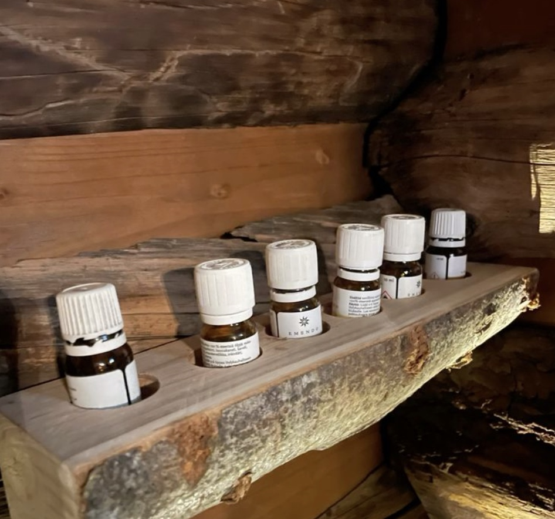
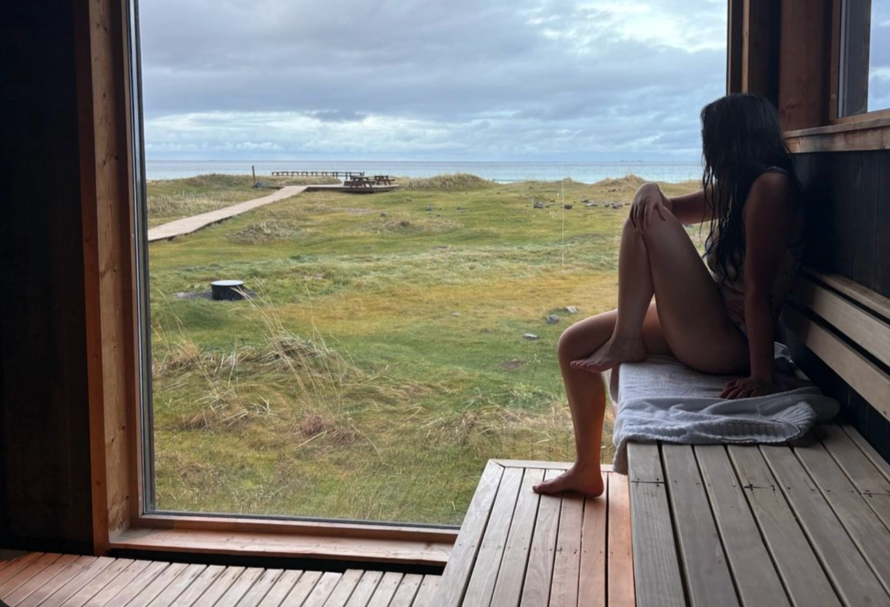
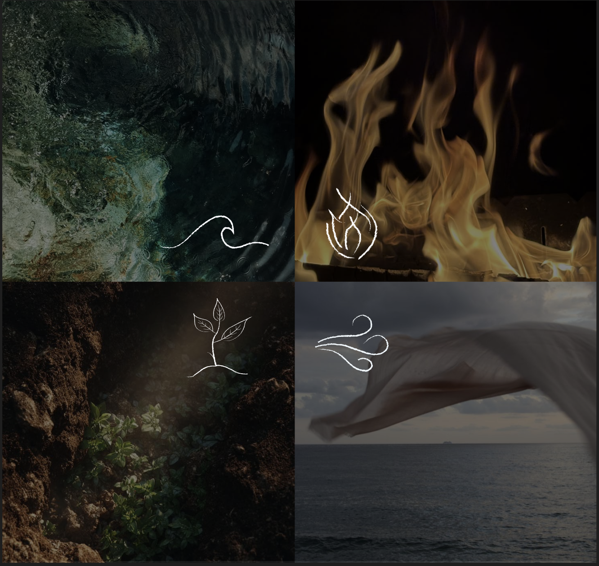
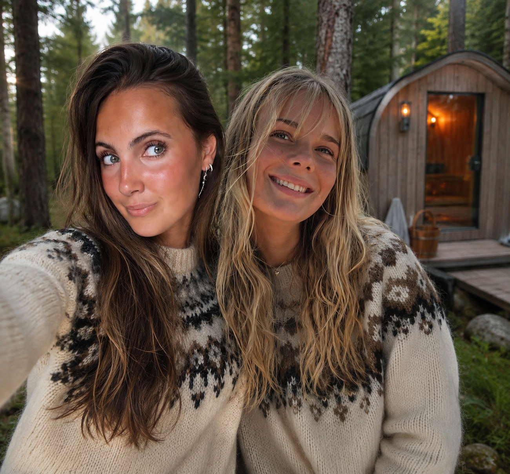

Vores olier
Dufte udvalgt til hver seance.
Vores olier
Vi bruger rene æteriske olier med blandt andet eukalyptus, lavendel, spearmint og citrongræs

En sauna, hvor hver seance er komponeret omkring sanserne — æteriske olier, de fire elementer og tid til at være til stede.
Tilmeld dig nuSanse Hytten er et lille, roligt rum til dem, der vil mere end bare at svede. Vi har skabt et sted, hvor varmen, duftene og stilheden får lov at fylde, og hvor du kan lægge hverdagen fra dig en stund. Her er der ingen travlhed, kun tid til at mærke efter.
En sansesauna er en guidet saunagus, hvor hver seance bygger på et af de fire elementer: vand, ild, luft og jord. Æteriske olier, varme og rolige pauser vækker sanserne én efter én. Du skal ikke kunne noget på forhånd — bare læne dig tilbage og være til stede.

Dufte udvalgt til hver seance.
Vi bruger rene æteriske olier med blandt andet eukalyptus, lavendel, spearmint og citrongræs

Vand, ild, luft og jord
Hver session er bygget op omkring de fire elementer. Ilden varmer, vandet afkøler, luften åbner for dybe åndedrag, og jorden samler dig igen. Dertil vælger vi rene æteriske olier som eukalyptus, lavendel, spearmint og citrongræs, så duft og varme arbejder sammen.

Mød menneskerne bag
Vi er Filippa og Livia, to veninder med en stor forkærlighed for varme, ro og gode stunder sammen. Idéen til os opstod en kold vinteraften, hvor vi sad i en lille sauna og tænkte: Hvorfor skal det her kun være noget, vi gør to? I dag inviterer vi dig indenfor til oplevelser bygget op omkring de fire elementer: vand, ild, luft og jord. Vi tænder op, vælger dufte og skaber rammen, så du kan slippe hverdagen og trække vejret dybt. Hos os er der plads til både dem, der kommer alene, og dem, der tager hele vennegruppen med.